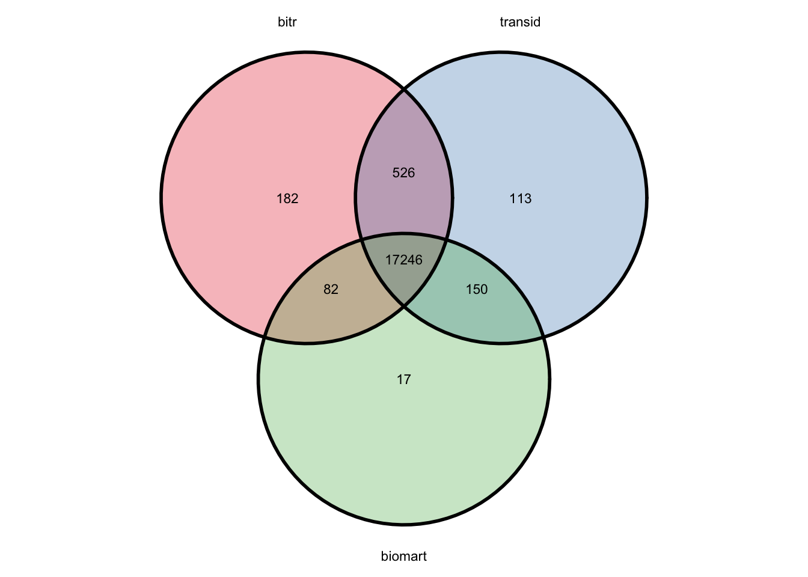

4 Gene ID conversion
If you have worked on genomics analysis before, you may have spent a lot of time converting gene identifiers from one type to another.
For example, gene set enrichment analysis is very common in the omics downstream process and is mainly based on MSigDB. According to its release note, since MSigDB 7.0, identifiers for genes are mapped to their HGNC approved Gene Symbol and NCBI Gene ID through annotations extracted from Ensembl’s BioMart data service, and are updated at each MSigDB release with the latest available version of Ensembl. Currently, MSigDB 7.5 has updated human gene annotations to Ensembl v105.
Hence, ID conversion helps you stay up to date with the latest annotations.
The most common gene ID types are symbol (e.g. TP53), NCBI Entrez (e.g. 7157), and Ensembl (e.g. ENSG00000141510). ID conversion among these different types is very common, and there are two main concerns: performance and flexibility.
4.1 Current tools
Currently, various tools are available, but different methods have their own drawbacks:
- biomaRt: This R package is frequently used to access the up-to-date Ensembl database. However, it has to access the online database every time, and there are too many built-in parameters to configure.
- clusterProfiler: This R package depends on Bioconductor annotation packages to extract NCBI gene information. NCBI updates its database daily, while Bioconductor packages are updated roughly every six months. Besides, it only supports 20 organisms, and users need to download and load the annotation data before mapping.
- gProfiler: This web server supports 40 types of IDs across more than 60 species. However, it only supports one-to-one conversion — for example, users cannot convert a gene symbol to both Entrez and Ensembl IDs at the same time. Besides, the output result is not very convenient for further processing.
- DAVID: The web server interface is not very user-friendly.
- UniProt: This large protein database supports almost all species, but users need to specify the input ID type, and it only converts to protein IDs.
- GIDcon: This web server only covers human, mouse, and rat. Users must separate gene IDs with commas when running a batch query, and converting just five symbols can take up to 8 seconds.
To address the problems above, genekitr combines both the Ensembl and NCBI databases to provide more comprehensive results while optimizing running speed.
It also supports 195 vertebrate species, 120 plant species, and two bacterial species (see also session 1.1).
4.2 Basic usage
transId provides five arguments:
id: gene ID (symbol, Entrez, or Ensembl), protein ID (see also session 4.2), or microarray ID (see also session 5.1)transTo: the target type for conversion. You can select more than one from “symbol”, “entrez”, “ensembl”, or “uniprot”. Abbreviations are also acceptable (e.g., “ens” works for “ensembl”, but “en” will raise an error because it cannot be distinguished from “entrez”)org: organism name, default is humanunique:TRUEorFALSE(default). IfTRUE, only one matched ID is returned.keepNA:TRUEorFALSE(default). Determines whether to keep unmatched IDs (as NA) or remove them.
## input_id ensembl
## 1 AKT3 ENSG00000117020
## 2 AKT3 ENSG00000275199
## 3 SSX6P ENSG00000171483
## 4 BCC7 ENSG00000141510
# fruit fly genes
transId(
id = c("10178780", "10178777", "10178786", "10178792"),
transTo = "sym", org = "fly"
)## input_id symbol
## 1 10178780 CR33929
## 2 10178777 CG42835
## 3 10178786 Su(Ste):CR40820
## 4 10178792 CG42694In the human example above, because the NA was removed, the result order is slightly different from the input order.
If you want to keep the same order as the input, you can set keepNA = TRUE:
transId(id, transTo = "ens", keepNA = TRUE)## input_id ensembl
## 1 AKT3 ENSG00000117020
## 2 AKT3 ENSG00000275199
## 3 SSX6P ENSG00000171483
## 4 FAKE_ID <NA>
## 5 BCC7 ENSG00000141510If you want to get a one-to-one mapping, you can set unique = TRUE, and the result with the most comprehensive information will be returned:
transId(id, transTo = "ens", keepNA = TRUE, unique = TRUE)## input_id ensembl
## 1 AKT3 ENSG00000117020
## 2 SSX6P ENSG00000171483
## 3 FAKE_ID <NA>
## 4 BCC7 ENSG000001415104.3 Features
4.3.1 f1: convert to several types at once
transTo can accept more than one type:
## input_id ensembl entrezid
## 1 AKT3 ENSG00000117020 10000
## 2 AKT3 ENSG00000275199 10000
## 3 SSX6P ENSG00000171483 280657
## 4 BCC7 ENSG00000141510 71574.3.2 f2: distinguish between symbol and alias
One common problem with the current tools mentioned above is confusion between gene symbols and gene aliases.
A gene alias is an alternative name for the official gene symbol — for example, “BCC7” is actually an alias for “TP53”. Sometimes a gene alias is even more widely used than the official symbol. For instance, “PDL1” is actually an alias for “CD274”.
Thanks to the combination of NCBI and Ensembl metadata, transId can easily recognize gene symbols and aliases by setting transTo = 'symbol'.
## input_id symbol
## 1 BCC7 TP53
## 2 TP53 TP53
## 3 PD1 PDCD1
## 4 PD1 SNCA
## 5 PD1 SPATA2
## 6 PDL1 CD274
## 7 TET2 TET24.3.3 f3: no need to worry about Ensembl versions
An Ensembl stable ID consists of five parts: ENS(species)(object type)(identifier).(version).
For example, ENSG00000141510.11 refers to TP53, but the version number .11 at the end can confuse many tools.
With transId, however, you don’t need to worry about this issue anymore.
transId("ENSG00000141510.11", "symbol")## input_id symbol
## 1 ENSG00000141510 TP534.4 Exercise 1: DEG result
The built-in example data contains differentially expressed genes from GSE42872.
##
## down stable up
## 451 17009 579
id <- deg$entrezid
length(id)## [1] 18039
4.4.1 clusterProfiler::bitr
Users need to specify the input ID type and the target type from columns(org.Hs.eg.db).
# You must first install org.Hs.eg.db
# BiocManager::install('org.Hs.eg.db')
library(org.Hs.eg.db)
library(clusterProfiler)
AnnotationDbi::columns(org.Hs.eg.db)## [1] "ACCNUM" "ALIAS" "ENSEMBL" "ENSEMBLPROT" "ENSEMBLTRANS"
## [6] "ENTREZID" "ENZYME" "EVIDENCE" "EVIDENCEALL" "GENENAME"
## [11] "GO" "GOALL" "IPI" "MAP" "OMIM"
## [16] "ONTOLOGY" "ONTOLOGYALL" "PATH" "PFAM" "PMID"
## [21] "PROSITE" "REFSEQ" "SYMBOL" "UCSCKG" "UNIGENE"
## [26] "UNIPROT"
bitr_res <- bitr(id, fromType = "ENTREZID", toType = "SYMBOL", OrgDb = "org.Hs.eg.db")
bitr_sym <- unique(bitr_res$SYMBOL)
length(bitr_sym)## [1] 18036
4.4.2 biomaRt::getBM
The initialization process depends mainly on Ensembl’s web access speed, and it usually takes tens of seconds.
# initializing...
ensembl <- biomaRt::useEnsembl(
biomart = "genes",
dataset = "hsapiens_gene_ensembl"
)
# conversion
biomart_res <- biomaRt::getBM(
attributes = c("entrezgene_id", "external_gene_name"),
filters = c("entrezgene_id"),
mart = ensembl,
values = id
)
biomart_sym <- unique(biomart_res$external_gene_name) %>%
stringi::stri_remove_empty()
length(biomart_sym)## [1] 17495
4.4.3 genekitr::transId
transid_res <- genekitr::transId(id, transTo = "sym", unique = T)
transid_sym <- unique(transid_res$symbol)
length(transid_sym)## [1] 180354.4.4 compare the three results

4.4.4.1 bitr vs transId
There are 117 genes found only in the bitr result:
## [1] "LOC100128398" "C19orf71" "LINC00476" "C1orf68" "LOC100129484"Let’s take a look at the first one, LINC00337, which is converted from gene 148645:
## [1] "148645"When we search this on NCBI, we find that the official symbol is now “ICMT-DT”, while “LINC00337” is just an alias. Looking back at the transId result, it stays up to date with the NCBI website.
## [1] "ICMT-DT"Besides, there are 118 unique symbols found only in the transId result:
## [1] "ZNF606-AS1" "TEKTIP1" "ERCC6L2-AS1" "KPLCE" "LINC02983"The gene ICMT-DT mentioned above is one of them.
4.4.4.2 biomart vs transId
There are 13 genes found only in the biomart result:
## [1] "C1orf68" "FAM205C" "SPATA48" "REXO1L6P" "BACH1" "THEGL"## [1] 100528032When we search NCBI for gene 100528032, we find that the official symbol is “KLRC4-KLRK1”. Looking back at both the transId and bitr results, they match the NCBI website.
## [1] "KLRC4-KLRK1"## [1] "KLRC4-KLRK1"4.5 Exercise 2: mixture of gene symbols and aliases
Compared with Entrez and Ensembl IDs, gene symbols and aliases are much harder to distinguish. In real scientific practice, the impact of confusing the two can be significant.
Takehara et al. (2018) had to retract their published paper simply because the authors mistakenly used “TAZ” as the actual research target instead of “WWTR1”, where “TAZ” is actually an alias for “WWTR1”.
Similar issues have been reported in the paper The risks of using unapproved gene symbols. Of course, this problem is not limited to human research alone. So we must stay alert to the risks posed by gene aliases.
4.5.1 HGNChelper vs transId
HGNChelper is mainly designed for human research, so here we’ll use a simple human gene list as an example.
id <- c("TBET", "B220", "BCC7", "PD1", "PDL1")
transid_res <- genekitr::transId(id, transTo = "sym", unique = FALSE)
transid_res## input_id symbol
## 1 TBET TBX21
## 2 B220 PTPRC
## 3 BCC7 TP53
## 4 PD1 PDCD1
## 5 PD1 SNCA
## 6 PD1 SPATA2
## 7 PDL1 CD274
hgnc_res <- HGNChelper::checkGeneSymbols(id)
hgnc_res## x Approved Suggested.Symbol
## 1 TBET FALSE <NA>
## 2 B220 FALSE <NA>
## 3 BCC7 FALSE <NA>
## 4 PD1 FALSE PDCD1 /// SNCA /// SPATA2
## 5 PDL1 FALSE CD274The first three genes are omitted in the HGNChelper result.
4.5.2 GeneSymbolThesarus vs transId
GeneSymbolThesarus is a function from Seurat that looks up current gene symbols from the HUGO Gene Nomenclature Committee (HGNC). Since it searches online, it tends to be relatively slow.
## Registered S3 method overwritten by 'spatstat.core':
## method from
## formula.glmmPQL MASS## Attaching SeuratObject## Attaching sp##
## Attaching package: 'Seurat'## The following object is masked from 'package:DT':
##
## JS
start <- Sys.time()
seurat_res <- Seurat::GeneSymbolThesarus(symbols = id)
end <- Sys.time()
(end - start)## Time difference of 7.697157 secs
seurat_res## B220 PDL1
## "PTPRC" "CD274"Seurat only returns a single record here.
4.5.3 alias2Symbol vs transId
alias2Symbol is a function from limma that relies on Bioconductor’s organism annotation packages.
limma_res <- limma::alias2Symbol(id, species = "Hs")
# compare with the transId result
id## [1] "TBET" "B220" "BCC7" "PD1" "PDL1"
limma_res## [1] "CD274" "TBX21" "PDCD1" "PTPRC" "SNCA" "TP53" "SPATA2"
transid_res$symbol## [1] "TBX21" "PTPRC" "TP53" "PDCD1" "SNCA" "SPATA2" "CD274"It seems that the alias2Symbol result does not preserve the original input order, which could easily confuse users. In contrast, transId always keeps the original order (and if you want a one-to-one mapping, simply set unique = TRUE).